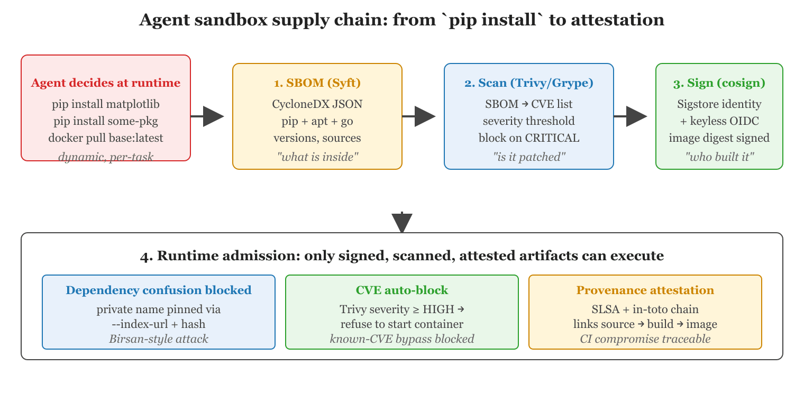

"Your agent is only as secure as the least audited dependency in its container image."
Guard, Supply-Chain-Aware AI Agent
Agent sandboxes are only as secure as the software running inside them. Section 49.2 covered how to isolate agent execution with containers and microVMs. This section addresses a complementary threat: the software supply chain within those sandboxes. When an agent installs packages, pulls base images, or executes code from external sources, it inherits every vulnerability and backdoor in those dependencies. Supply-chain security tools (SBOM generation, vulnerability scanning, image signing, provenance attestation) provide the verification layer that ensures sandbox contents are trustworthy, not just isolated.

pip install into an attack surface. The hardening chain is: Syft generates a CycloneDX SBOM, Trivy or Grype scans for CVEs, cosign signs the resulting image with Sigstore keyless identities, and a runtime admission policy rejects anything missing a valid signature, scan, or provenance attestation. This is the same pattern that blocked dependency-confusion exploits like Alex Birsan's 2021 bug bounty run.Prerequisites
This section builds on the sandboxed execution environments from Section 49.2 and the agent safety foundations in Section 49.1. Familiarity with Docker, container images, and basic CI/CD pipeline concepts is assumed. Understanding of tool use patterns from Chapter 26 provides helpful context for why agents need to install and execute arbitrary code.
49.4.1 Why Agent Sandboxes Need Supply-Chain Hardening
The dependency confusion attack vector was disclosed by Alex Birsan in 2021, who collected over $130,000 in bug bounties from Apple, Microsoft, Tesla, Yelp, PayPal, Uber, Shopify, and 27 other companies in a single research run. He published private internal package names by reading the JavaScript files in those companies' public websites; the package-managers cheerfully installed his proof-of-concept payloads instead of the real internal libraries.
Agentic AI systems differ from traditional software in a critical way: the agent decides at runtime which packages to install, which APIs to call, and which code to execute. A coding agent asked to "build a data visualization" might install matplotlib, pandas, seaborn, and a dozen transitive dependencies. A research agent might pull a specialized NLP library the developer never anticipated. Each installed package is an attack surface: it might contain a known vulnerability (CVE), a malicious post-install script, or a dependency confusion payload that hijacks a private package name.
Traditional applications lock their dependencies at build time, audit them once, and deploy a fixed artifact. Agent sandboxes, by contrast, assemble their dependency set dynamically. This means the security posture of an agent sandbox can change between one task and the next. A sandbox that was safe for yesterday's task might be compromised by today's task if the agent installs a package with a newly disclosed vulnerability. Supply-chain hardening provides the tooling to detect, prevent, and recover from these risks.
The threat is not theoretical. In 2024, the Trivy project itself experienced a CI compromise where a malicious pull request attempted to inject code into the build pipeline. Dependency confusion attacks (where an attacker publishes a malicious package to PyPI or npm using the same name as a private internal package) have targeted organizations including Apple, Microsoft, and Tesla. For agent systems that install packages on behalf of users, these attacks are especially dangerous because the agent, not the developer, is making the installation decision.
The fundamental tension in agent sandbox security is between flexibility and control. Agents need to install packages to accomplish tasks. But every installed package is a potential vector for supply-chain attacks. The solution is not to prohibit package installation (that would cripple the agent) but to verify, scan, and attest every component that enters the sandbox. Think of supply-chain security as the "immigration checkpoint" for your sandbox: everything that enters gets inspected, documented, and verified before it is allowed to execute.
49.4.2 SBOM Generation with Syft
A Software Bill of Materials (SBOM) is a complete inventory of every software component in a container image or filesystem. It lists each package, its version, its source, and its license. SBOMs serve two purposes in agent security: (1) they provide the input for vulnerability scanners (you cannot scan what you have not inventoried), and (2) they create an audit trail of exactly what software was present in the sandbox when a task executed.
Syft (from Anchore) is the standard open-source tool for generating SBOMs. It supports multiple output formats (SPDX, CycloneDX, Syft JSON) and can scan container images, directories, and archives. Syft detects packages from multiple ecosystems: APK (Alpine), APT (Debian/Ubuntu), RPM (RHEL/Fedora), pip (Python), npm (Node.js), Go modules, Rust crates, and Java JARs.
#!/usr/bin/env bash
# Generate an SBOM for the agent-runner container image
# Install Syft (one-time setup)
curl -sSfL https://raw.githubusercontent.com/anchore/syft/main/install.sh | sh -s -- -b /usr/local/bin
# Scan the container image and produce a CycloneDX JSON SBOM
syft packages registry.example.com/agent-runner:latest \
-o cyclonedx-json \
> sbom-agent-runner.cdx.json
# Inspect the SBOM: count packages by ecosystem
echo "Package counts by type:"
cat sbom-agent-runner.cdx.json | \
python3 -c "
import json, sys, collections
bom = json.load(sys.stdin)
types = collections.Counter(
c.get('purl', '').split('/')[0].replace('pkg:', '')
for c in bom.get('components', [])
if c.get('purl')
)
for t, count in types.most_common():
print(f' {t}: {count}')
"For agent sandboxes with dynamic dependencies, generate the SBOM after the agent installs its packages but before the agent executes the task code. This captures the complete dependency set for that specific task. Store the SBOM alongside the task execution log so you can retrospectively audit which packages were present when a particular task ran.
49.4.3 Vulnerability Scanning with Trivy
Trivy (from Aqua Security) is a comprehensive vulnerability scanner for containers, filesystems, git repositories, and Kubernetes clusters. Given an SBOM or a container image, Trivy matches each package against vulnerability databases (NVD, GitHub Advisory Database, OS-specific advisories) and reports known CVEs with severity ratings (CRITICAL, HIGH, MEDIUM, LOW). Trivy also detects misconfigurations (e.g., running as root, exposed secrets) and license violations.
#!/usr/bin/env bash
# Scan the agent-runner image for vulnerabilities
# Scan container image directly
trivy image registry.example.com/agent-runner:latest \
--severity CRITICAL,HIGH \
--format json \
--output trivy-report.json
# Alternatively, scan from an existing SBOM
trivy sbom sbom-agent-runner.cdx.json \
--severity CRITICAL,HIGH \
--format table
# Scan a filesystem (useful for scanning the sandbox after package install)
trivy fs /sandbox/workspace \
--scanners vuln,secret,misconfig \
--severity CRITICAL,HIGH
# Exit code 1 if vulnerabilities found (useful for CI gates)
trivy image registry.example.com/agent-runner:latest \
--exit-code 1 \
--severity CRITICALFor agent sandboxes, integrate Trivy scanning at two points. First, scan the base image during CI to ensure it ships without known vulnerabilities. Second, scan the sandbox filesystem after the agent installs packages but before task execution. If the post-install scan finds a critical vulnerability, the sandbox runtime can block execution and return an error to the user, explaining that a required package has a known security issue.
import subprocess
import json
def scan_sandbox(workspace_path: str) -> dict:
"""Scan the agent sandbox workspace for vulnerabilities after package install."""
result = subprocess.run(
[
"trivy", "fs", workspace_path,
"--scanners", "vuln,secret",
"--severity", "CRITICAL,HIGH",
"--format", "json",
"--quiet",
],
capture_output=True,
text=True,
)
report = json.loads(result.stdout) if result.stdout else {"Results": []}
# Aggregate findings
critical = []
high = []
for target in report.get("Results", []):
for vuln in target.get("Vulnerabilities", []):
entry = {
"id": vuln["VulnerabilityID"],
"package": vuln["PkgName"],
"installed": vuln["InstalledVersion"],
"fixed": vuln.get("FixedVersion", "not yet"),
"title": vuln.get("Title", ""),
}
if vuln["Severity"] == "CRITICAL":
critical.append(entry)
else:
high.append(entry)
return {
"safe": len(critical) == 0,
"critical_count": len(critical),
"high_count": len(high),
"critical": critical,
"high": high,
}
# Usage in the sandbox runtime
scan = scan_sandbox("/sandbox/workspace")
if not scan["safe"]:
raise SecurityError(
f"Sandbox blocked: {scan['critical_count']} critical vulnerabilities found. "
f"First: {scan['critical'][0]['id']} in {scan['critical'][0]['package']}"
)49.4.4 Image Signing and Verification with Cosign
Vulnerability scanning tells you whether a container image contains known vulnerabilities. Image signing tells you whether the image is the one you built, or whether it was tampered with in transit or at rest. Cosign (from the Sigstore project) provides keyless signing and verification of container images using short-lived certificates issued by Fulcio and recorded in the Rekor transparency log. "Keyless" means there is no long-lived signing key to manage; instead, Cosign uses OIDC identity (e.g., your CI system's workload identity) to obtain an ephemeral signing certificate.
#!/usr/bin/env bash
# Sign and verify the agent-runner container image with Cosign
# Sign the image (keyless mode, uses OIDC identity from CI)
cosign sign registry.example.com/agent-runner:latest
# Verify the signature, checking that it was signed by the expected identity
cosign verify registry.example.com/agent-runner:latest \
--certificate-identity "https://github.com/yourorg/agent-runner/.github/workflows/build.yml@refs/heads/main" \
--certificate-oidc-issuer "https://token.actions.githubusercontent.com"
# Attach the SBOM as an attestation to the image
cosign attest \
--predicate sbom-agent-runner.cdx.json \
--type cyclonedx \
registry.example.com/agent-runner:latest
# Verify the SBOM attestation
cosign verify-attestation \
--type cyclonedx \
--certificate-identity "https://github.com/yourorg/agent-runner/.github/workflows/build.yml@refs/heads/main" \
--certificate-oidc-issuer "https://token.actions.githubusercontent.com" \
registry.example.com/agent-runner:latestIn the agent sandbox deployment pipeline, configure the container runtime (Kubernetes admission controller, Docker content trust, or a custom policy engine) to reject any image that lacks a valid Cosign signature. This prevents deployment of unsigned or tampered images, even if an attacker gains write access to the container registry.
Image signing and SBOM attestation together answer two distinct questions. The signature answers "who built this image, and has it been modified since?" The SBOM attestation answers "what is inside this image?" By requiring both, you establish a chain of trust from the CI build to the production sandbox. An attacker who replaces the image is caught by the signature check. An attacker who injects a vulnerable dependency is caught by the SBOM scan. Neither control alone is sufficient; together they provide defense in depth.
49.4.5 The SLSA Framework: Provenance and Build Integrity
SLSA (Supply-chain Levels for Software Artifacts, pronounced "salsa") is a framework for ensuring the integrity of software artifacts throughout the build and delivery process. SLSA defines four levels of increasing assurance:
- SLSA Level 1: Build process is documented (provenance exists but is not verified).
- SLSA Level 2: Build is executed on a hosted platform with signed provenance (tamper-evident).
- SLSA Level 3: Build is executed on a hardened platform with non-falsifiable provenance (tamper-resistant). The build environment is ephemeral and isolated.
- SLSA Level 4: Hermetic builds with two-person review of all changes. The highest assurance level, requiring reproducible builds and verified source provenance.
For agent sandbox images, SLSA Level 3 is a practical target. GitHub Actions and Google Cloud Build both support SLSA Level 3 provenance generation through the slsa-github-generator and slsa-verifier tools. The provenance document records which source repository was built, which commit was checked out, which builder was used, and which build steps were executed. This document is signed and attached to the container image as an in-toto attestation.
# .github/workflows/build-agent-runner.yml
# GitHub Actions workflow with SLSA Level 3 provenance
name: Build Agent Runner
on:
push:
branches: [main]
jobs:
build:
runs-on: ubuntu-latest
permissions:
contents: read
packages: write
id-token: write # Required for keyless signing
steps:
- uses: actions/checkout@v4
- name: Build container image
run: |
docker build -t registry.example.com/agent-runner:${{ github.sha }} .
- name: Generate SBOM
uses: anchore/sbom-action@v0
with:
image: registry.example.com/agent-runner:${{ github.sha }}
format: cyclonedx-json
output-file: sbom.cdx.json
- name: Scan for vulnerabilities
uses: aquasecurity/trivy-action@master
with:
image-ref: registry.example.com/agent-runner:${{ github.sha }}
severity: CRITICAL,HIGH
exit-code: "1"
- name: Push image
run: docker push registry.example.com/agent-runner:${{ github.sha }}
- name: Sign image and attach SBOM
uses: sigstore/cosign-installer@v3
- run: |
cosign sign registry.example.com/agent-runner:${{ github.sha }}
cosign attest --predicate sbom.cdx.json --type cyclonedx \
registry.example.com/agent-runner:${{ github.sha }}
provenance:
needs: build
uses: slsa-framework/slsa-github-generator/.github/workflows/generator_container_slsa3.yml@v2.0.0
with:
image: registry.example.com/agent-runner
digest: ${{ needs.build.outputs.digest }}- Agent sandboxes pull a long chain of third-party artifacts: Base images, language runtimes, Python packages, and model weights all become parts of your trusted computing base. Treat each as an attack surface.
- SBOMs make the supply chain inspectable: Generate an SBOM with Syft at build time so you can diff what shipped against what was intended.
- Vulnerability scanning belongs in the build, not in production: Run Trivy in CI and fail the build on critical CVEs rather than discovering them after deploy.
- Cosign signs and verifies images cryptographically: An unsigned image must never reach a production cluster; an admission controller is the enforcement point.
What Comes Next
Per-artifact hardening is necessary but not sufficient. The build pipeline itself must be tamper-evident, and the model hubs you pull weights from must be scanned. Continue in Section 49.4a: SLSA, CI Hardening & Model-Hub Scanning.